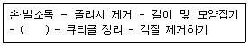

미용사(네일) (2016-04-02 기출문제)
1과목: 공중위생학
1. 자연적 환경요소에 속하지 않는 것은?
- 기온
- 기습
- 소음
- 위생시설
(정답률: 89%)

2. 역학에 대한 내용으로 옳은 것은?
- 인간 개인을 대상으로 질병 발생 현상을 설명하는 학문 분야이다.
- 원인과 경과보다 결과 중심으로 해석하여 질병 발생을 예방한다.
- 질병 발생 현상을 생물학과 환경적으로 이분하여 설명한다.
- 인간 집단을 대상으로 질병 발생과 그 원인을 탐구하는 학문이다.
(정답률: 80%)
3. 파리가 매개할 수 있는 질병과 거리가 먼 것은?
- 아메바성 이질
- 장티푸스
- 발진티푸스
- 콜레라
(정답률: 48%)
4. 인구구성 중 14세 이하가 65세 이상 인구의 2배 정도이며 출생률과 사망률이 모두 낮은 형은?
- 피라미드형
- 종형
- 항아리형
- 별형
(정답률: 65%)
5. 식생활이 탄수화물이 주가 되며, 단백질과 무기질이 부족한 음식물을 장기적으로 섭취함으로써 발생되는 단백질 결핍증은?
- 펠라그라(pellagra)
- 각기병
- 콰시오르코르증(kwashiorkor)
- 괴혈병
(정답률: 58%)
6. 제1군 감염병에 해당하는 것은?
- 콜레라, 장티푸스
- 파라티푸스, 홍역
- 세균성 이질, 폴리오
- A형 간염, 결핵
(정답률: 64%)
7. 흡연이 인체에 미치는 영향으로 가장 적합한 것은?
- 구강암, 식도암 등의 원인이 된다.
- 피부 혈관을 이완시켜서 피부 온도를 상승시킨다.
- 소화촉진, 식욕증진 등에 영향을 미친다.
- 폐기종에는 영향이 없다.
(정답률: 90%)
8. 대장균이 사멸되지 않는 경우는?
- 고압증기멸균
- 저온소독
- 방사선멸균
- 건열멸균
(정답률: 82%)
9. 다음 중 자외선 소독기의 사용으로 소독효과를 기대할 수 없는 경우는?
- 여러 개의 머리빗
- 날이 열린 가위
- 염색용 볼
- 여러 장의 겹쳐진 타월
(정답률: 90%)
10. 다음 중 가위를 끓이거나 증기소독한 후 처리방법 으로 가장 적합하지 않은 것은?
- 소독 후 수분을 잘 닦아낸다.
- 수분 제거 후 엷게 기름칠을 한다.
- 자외선 소독기에 넣어 보관한다.
- 소독 후 탄산나트륨을 발라둔다.
(정답률: 75%)
11. 다음 중 미생물의 종류에 해당하지 않는 것은?
- 진균
- 바이러스
- 박테리아
- 편모
(정답률: 71%)
12. 금속성 식기, 면 종류의 의류, 도자기의 소독에 적합한 소독방법은?
- 화염멸균법
- 건열멸균법
- 소각소독법
- 자비소독법
(정답률: 66%)
13. 100℃에서 30분간 가열하는 처리를 24시간마다 3회 반복하는 멸균법은?
- 고압증기멸균법
- 건열멸균법
- 고온멸균법
- 간헐멸균법
(정답률: 58%)
14. 여러 가지 물리화학적 방법으로 병원성 미생물을 가능한 한 제거하여 사람에게 감염의 위험이 없도록 하는 것은?
- 멸균
- 소독
- 방부
- 살충
(정답률: 70%)
2과목: 피부학
15. 피지선에 대한 설명으로 틀린 것은?
- 피지를 분비하는 선으로 진피 중에 위치한다.
- 피지선은 손바닥에는 없다.
- 피지의 1일 분비량은 10~20g 정도이다
- 피지선이 많은 부위는 코 주위이다.
(정답률: 79%)
16. 다음 중 입모근과 가장 관련 있는 것은?
- 수분 조절
- 체온 조절
- 피지 조절
- 호르몬 조절
(정답률: 59%)
17. 적외선이 피부에 미치는 작용이 아닌 것은?
- 온열 작용
- 비타민 D 형성 작용
- 세포증식 작용
- 모세혈관 확장 작용
(정답률: 59%)
18. 얼굴에 있어 T존 부위는 번들거리고, 볼 부위는 당기는 피부 유형은?
- 건성피부
- 정상(중성) 피부
- 지성피부
- 복합성피부
(정답률: 90%)
19. 다음 중 기미의 유형이 아닌 것은?
- 표피형 기미
- 진피형 기미
- 피하조직형 기미
- 혼합형 기미
(정답률: 71%)
20. 지용성 비타민이 아닌 것은?
- Vitamin D
- Vitamin A
- Vitamin E
- Vitamin B
(정답률: 57%)
21. 단순포진이 나타나는 증상으로 가장 거리가 먼 것은?
- 통증이 심하여 다른 부위로 통증이 퍼진다.
- 홍반이 나타나고 곧이어 수포가 생긴다.
- 상체에 나타나는 경우 얼굴과 손가락에 잘 나타난다.
- 하체에 나타나는 경우 성기와 둔부에 잘 나타난다.
(정답률: 75%)
3과목: 공중위생법규
22. 공중위생관리법에서 사용하는 용어의 정의로 틀린 것은?
- “공중위생영업”이라 함은 다수인을 대상으로 위생관리서비스를 제공하는 영업으로서 숙박업, 목욕장업, 이용업, 미용업, 세탁업, 위생관리용 역업을 말한다.
- “숙박업”이라 함은 손님이 잠을 자고 머물 수 있도록 시설 및 설비 등의 서비스를 제공하는 영업을 말한다.
- “위생관리용역업”이라 함은 공중이 이용하는 건축물, 시설물 등의 청결유지와 실내공기정화를 위한 청소 등을 대행하는 영업을 말한다.
- “미용업”이라 함은 손님의 머리카락 또는 수염을 깎거나 다듬는 등의 방법으로 손님의 용모를 단정하게 하는 영업을 말한다.
(정답률: 73%)
23. 공중위생관리법상의 규정에 위반하여 위생교육을 받지 아니한 때 부과되는 과태료의 기준은?
- 300만 원 이하
- 500만 원 이하
- 400만 원 이하
- 200만 원 이하
(정답률: 68%)
24. 이·미용사의 면허가 취소되거나 면허의 정지명령을 받은 자는 누구에게 면허증을 반납하여야 하는가?
- 보건복지부장관
- 시·도지사
- 시장·군수·구청장
- 보건소장
(정답률: 85%)
25. 개선을 명할 수 있는 경우에 해당하지 않는 사람은?
- 공중위생영업의 종류별 시설 및 설비기준을 위반한 공중위생영업자
- 위생관리의무 등을 위반한 공중위생영업자
- 공중위생영업자의 지위를 승계한 자로서 이에 관한 신고를 하지 아니한 자
- 위생관리의무를 위반한 공중위생시설의 소유자 등
(정답률: 70%)
26. 이·미용업자의 위생관리 기준에 대한 내용 중 틀린 것은?
- 요금표 외의 요금을 받지 않을 것
- 의료행위를 하지 않을 것
- 의료용구를 사용하지 않을 것
- 1회용 면도날은 손님 1인에 한하여 사용할 것
(정답률: 77%)
27. 위생서비스 평가 결과 위생서비스의 수준이 우수하다고 인정되는 영업소에 대하여 포상을 실시할 수 있는 자에 해당하지 않는 것은?
- 구청장
- 시·도지사
- 군수
- 보건소장
(정답률: 72%)
28. 손님에게 도박 그 밖에 사행행위를 하게 한 때에 대한 1차 위반 시 행정처분기준은?
- 영업정지 1월
- 영업정지 2월
- 영업정지 3월
- 영업장 폐쇄명령
(정답률: 46%)
4과목: 화장품학
29. 에멀전의 형태를 가장 잘 설명한 것은?
- 지방과 물이 불균일하게 섞인 것이다
- 두 가지 액체가 같은 농도의 한 액체로 섞여있다.
- 고형의 물질이 아주 곱게 혼합되어 균일한 것처럼 보인다.
- 두 가지 또는 그 이상의 액상물질이 균일하게 혼합되어 있는 것이다.
(정답률: 75%)
30. 다음 중 피부 상재균의 증식을 억제하는 항균기능을 가지고 있고, 발생한 체취를 억제하는 기능을 가진 것은?
- 바디샴푸
- 데오도란트
- 샤워코롱
- 오데토일렛
(정답률: 83%)
31. 기능성화장품에 사용되는 원료와 그 기능의 연결이 틀린 것은?
- 비타민 C - 미백효과
- AHA(Alpha - hydroxy acid) - 각질 제거
- DHA(dihydroxy acetone) - 자외선 차단
- 레티노이드(retinoid) - 콜라겐과 엘라스틴의 회복을 촉진
(정답률: 77%)
32. 방부제가 갖추어야 할 조건이 아닌 것은?
- 독특한 색상과 냄새를 지녀야 한다.
- 적용 농도에서 피부에 자극을 주어서는 안 된다.
- 방부제로 인하여 효과가 상실되거나 변해서는 안 된다.
- 일정 기간 동안 효과가 있어야 한다.
(정답률: 94%)
33. 화장품법상 화장품이 인체에 사용되는 목적 중 틀린 것은?
- 인체를 청결하게 한다.
- 인체를 미화한다.
- 인체의 매력을 증진시킨다.
- 인체의 용모를 치료한다.
(정답률: 85%)
34. 에센셜 오일의 보관 방법에 관한 내용으로 틀린 것은?
- 뚜껑을 닫아 보관해야 한다.
- 직사광선을 피하는 것이 좋다.
- 통풍이 잘되는 곳에 보관해야 한다.
- 투명하고 공기가 통할 수 있는 용기에 보관해 여야 한다.
(정답률: 90%)
35. 기초화장품의 기능이 아닌 것은?
- 피부 세정
- 피부 정돈
- 피부 보호
- 피부결점 커버
(정답률: 91%)
5과목: 네일 개론
36. 발허리뼈(중족골) 관절을 굴곡 시키고, 외측 4개 발가락의 지골간관절을 신전시키는 발의 근육은?
- 벌레근(충양근)
- 새끼벌림근(소지외전근)
- 짧은새끼굽힘근(단소지굴근)
- 짧은엄지굽힘근(단무지굴근)
(정답률: 66%)
37. 한국네일미용에서 부녀자와 처녀들 사이에서 염지갑화라고 하는 봉선화 물들이기 풍습이 이루어졌던 시기로 옳은 것은?
- 신라시대
- 고구려시대
- 고려시대
- 조선시대
(정답률: 76%)
38. 네일 매트릭스에 대한 설명으로 옳은 것은?
- 네일 베드를 보호하는 기능을 한다.
- 네일 바디를 받쳐주는 역할을 한다.
- 모세혈관, 림프, 신경조직이 있다.
- 손톱이 자라기 시작하는 곳이다.
(정답률: 55%)
39. 손톱의 성장과 관련한 내용 중 틀린 것은?
- 겨울보다 여름이 빨리 자란다.
- 임신기간 동안에는 호르몬의 변화로 손톱이 빨리 자란다.
- 피부유형 중 지성피부의 손톱이 더 빨리 자란다.
- 연령이 젊을수록 손톱이 더 빨리 자란다.
(정답률: 76%)
40. 손톱의 특성에 대한 설명으로 가장 거리가 먼 것은?
- 조체(네일 바디)는 약 5% 수분을 함유하고 있다.
- 아미노산과 시스테인이 많이 함유되어 있다.
- 조상(네일 베드)은 혈관에서 산소를 공급받는다.
- 피부의 부속물로 신경, 혈관, 털이 없으며 반투명의 각질판이다.
(정답률: 61%)
41. 손톱과 발톱을 너무 짧게 자를 경우 발생할 수 있는 것은?
- 오니코렉시스
- 오니코아트로피
- 오니코파이마
- 오니코크립토시스
(정답률: 57%)
42. 다음 중 손의 근육이 아닌 것은?
- 바깥쪽뼈사이근(장측골간근)
- 등쪽뼈사이근(배측골간근)
- 새끼맞섬근(소지대립근)
- 반힘줄근(반건양근)
(정답률: 50%)
43. 자연네일이 매끄럽게 되도록 손톱 표면의 거칠음과 기복을 제거하는 데 사용하는 도구로 가장 적합한 것은?
- 100그릿 네일 파일
- 에머리 보드
- 네일 클리퍼
- 샌딩 파일
(정답률: 87%)
44. 네일 미용관리 후 고객이 불만족할 경우 네일 미용인이 우선적으로 해야 할 대처 방법으로 가장 적합한 것은?
- 만족할 수 있는 주변의 네일 샵 소개
- 불만족 부분을 파악하고 해결방안 모색
- 샵 입장에서의 불만족 해소
- 할인이나 서비스 티켓으로 상황 마무리
(정답률: 95%)
45. 손톱의 주요한 기능 및 역할과 가장 거리가 먼 것은?
- 물건을 잡거나 긁을 때 또는 성상을 구별하는 기능이 있다.
- 방어와 공격의 기능이 있다.
- 노폐물의 분비기능이 있다.
- 손끝을 보호한다.
(정답률: 88%)
46. 외국의 네일미용 변천과 관련하여 그 시기와 내용의 연결이 옳은 것은?
- 1885년 : 폴리시의 필름형성제인 니트로셀룰로즈가 개발되었다.
- 1892년 : 손톱 끝이 뾰족한 아몬드형 네일이 유행하였다.
- 1917년 : 도구를 이용한 케어가 시작되었으며 유럽에서 네일관리가 본격적으로 시작되었다.
- 1960년 : 인조손톱 시술이 본격적으로 시작되었으며 네일관리와 아트가 유행하기 시작하였다.
(정답률: 43%)
47. 손톱 밑의 구조가 아닌 것은?
- 조근(네일 루트)
- 반월(루눌라)
- 조모(매트릭스)
- 조상(네일 베드)
(정답률: 48%)
48. 손톱의 이상증상 중 손톱을 심하게 물어뜯어 생기는 증상으로 인조손톱 관리나 매니큐어를 통해 습관을 개선할 수 있는 것은?
- 고랑진 손톱
- 교조증
- 조갑위축증
- 조내성증
(정답률: 85%)
49. 손가락 마디에 있는 뼈로서 총 14개로 구성되어 있는 뼈는?
- 손가락뼈(수지골)
- 손목뼈(수근골)
- 노뼈(요골)
- 자뼈(척골)
(정답률: 87%)
50. 손톱에 대한 설명 중 옳은 것은?
- 손톱에는 혈관이 있다.
- 손톱의 주성분은 인이다.
- 손톱의 주성분은 단백질이며, 죽은 세포로 구성 되어 있다.
- 손톱에는 신경과 근육이 존재한다.
(정답률: 81%)
6과목: 네일미용 기술
51. 인조네일을 보수하는 이유로 틀린 것은?
- 깨끗한 네일 미용의 유지
- 녹황색균의 방지
- 인조네일의 견고성 유지
- 인조네일의 원활한 제거
(정답률: 71%)
52. 페디큐어 컬러링 시 작업 공간 확보를 위해 발가락 사이에 끼워주는 도구는?
- 페디파일
- 푸셔
- 토우세퍼레이터
- 콘커터
(정답률: 92%)
53. 자연 네일을 오버레이하여 보강할 때 사용할 수 없는 재료는?
- 실크
- 아크릴
- 젤
- 파일
(정답률: 73%)
54. 남성 매니큐어 시 자연 네일의 손톱모양 중 가장 적합한 형태는?
- 오발형
- 아몬드형
- 둥근형
- 사각형
(정답률: 84%)
55. 페디큐어 작업과정 중 ( )에 해당하는 것은?

- 매뉴얼테크닉
- 족욕기에 발 담그기
- 페디파일링
- 탑코트 바르기
(정답률: 83%)
56. 라이트 큐어드 젤에 대한 설명이 옳은 것은?
- 공기 중에 노출되면 자연스럽게 응고된다.
- 특수한 빛에 노출시켜 젤을 응고시키는 방법이다.
- 경화 시 실내온도와 습도에 민감하게 반응한다.
- 글루 사용 후 글루드라이를 분사시켜 말리는 방법이다.
(정답률: 82%)
57. 네일 팁 작업에서 팁을 접착하는 올바른 방법은?
- 자연네일보다 한 사이즈 정도 작은 팁을 접착 한다.
- 큐티클에 최대한 가깝게 부착한다.
- 45° 각도로 네일 팁을 접착한다.
- 자연네일의 절반 이상을 덮도록 한다.
(정답률: 81%)
58. 베이스코트와 탑코트의 주된 기능에 대한 설명으로 가장 거리가 먼 것은?
- 베이스코트는 손톱에 색소가 착색되는 것을 방지한다.
- 베이스코트는 폴리시가 곱게 발리는 것을 도와준다.
- 탑코트는 폴리시에 광택을 더하여 컬러를 돋보이게 한다.
- 탑코트는 손톱에 영양을 주어 손톱을 튼튼하게 해준다.
(정답률: 90%)
59. 습식매니큐어 작업 과정에서 가장 먼저 해야 할 절차는?
- 컬러 지우기
- 손톱 모양 만들기
- 손 소독하기
- 핑거볼에 손 담그기
(정답률: 90%)
60. 아크릴 프렌치 스컬프처 시술 시 형성되는 스마일 라인의 설명으로 틀린 것은?
- 선명한 라인 형성
- 일자 라인 형성
- 균일한 라인 형성
- 좌우 라인 대칭
(정답률: 84%)